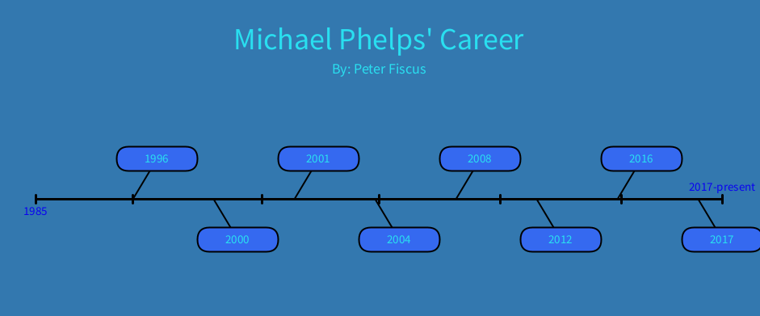
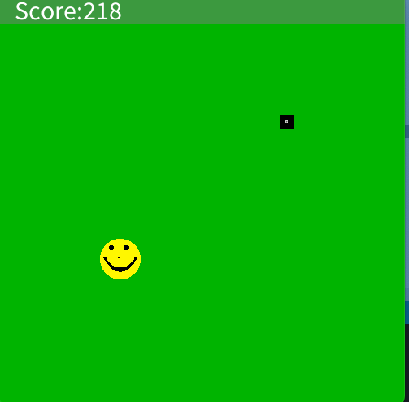
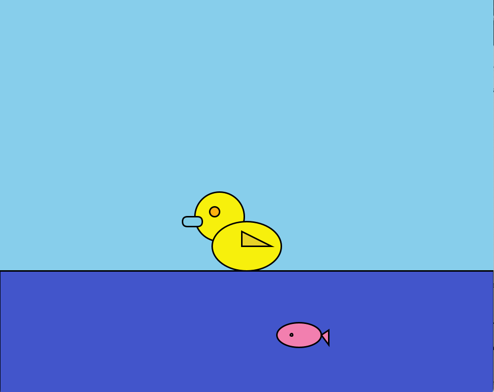
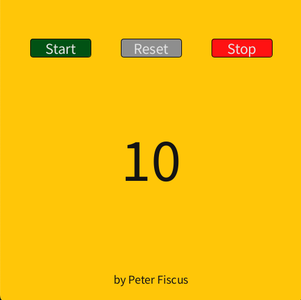
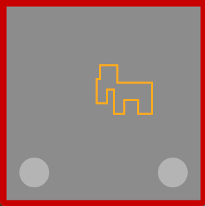

Typing Results

Coding Projects

This timeline shows Micheal Phelps' career and main achievements. Starting at a young age Micheal Phelps was a prodigy and at the age of 15 he went to the 2000 olympics in Sydney and then later that year he broke the 200 meter fly when he was only 15.
ShapeGame

This gmae is coded using the processing app throught the java type of code. I designed the characters using pixler. This game was one of the most difficult projects we have worked on because of the scoring system when you meet the target. Also, this was a difficult project because of how I wasn't very experienced with the java type of code.
MiniProject

This project was very fun because of the capability to be creative. I made this game/simulator using the proccessing app. The game I designed was a duck simulator that dives down and trys to catch the fish that is beneath the water, following the mouse.
Timer

The timer project features a 10 second timer that counts down and plays a sound once it reaches 0. Also with three buttons: Start, Stop, and Reset that chnage colors once toggled. This project was challenging but also rewarding because of how a timer is a very familiar concept that is rewarding to know that I have created it.
Echtch-a-sketch

This was my favorite topic so far that I have coded. I coded this using the proccesing app using the java system. This gmae is a traditional echtch-a-sketch game where you can draw lines to make an image using WASD. I liked this project because of how it lets you create anything but also being able to make something that was part of my childhood and is a fun game.